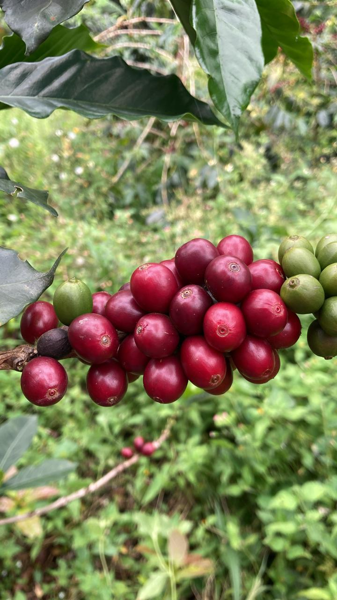
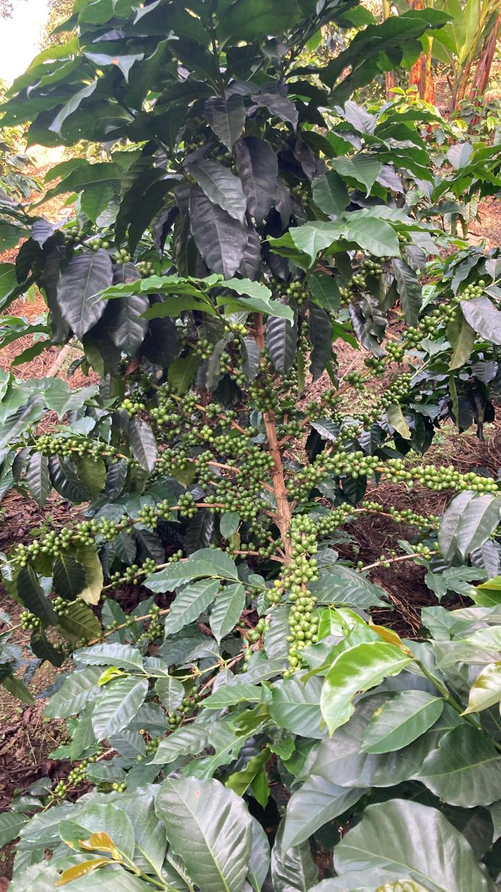
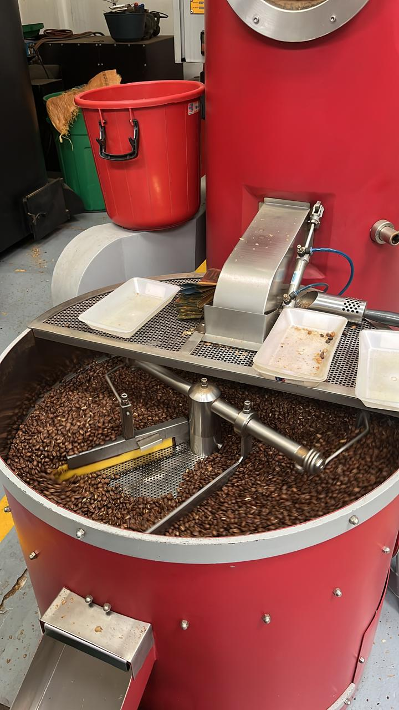

Nuestro Proceso
Del árbol a tu taza, con dedicación artesanal

1. Cultivo
Bajo sombra natural en sistema agroforestal.

2. Cosecha
Selección manual de cerezas maduras.

3. Secado
Proceso natural al sol en marquesinas.

4. Tostado
Tostado artesanal en lotes pequeños.